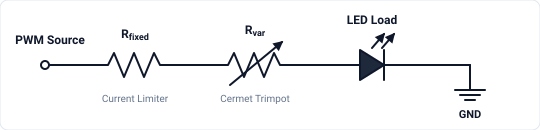
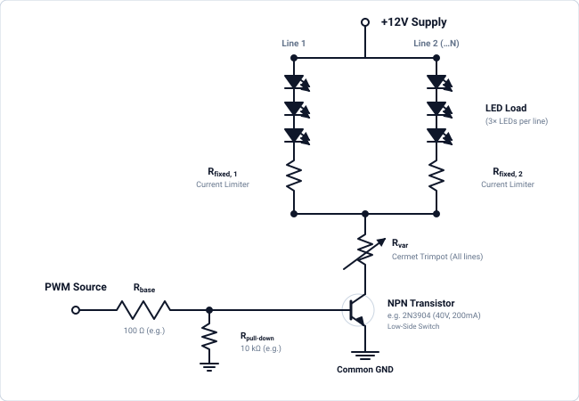
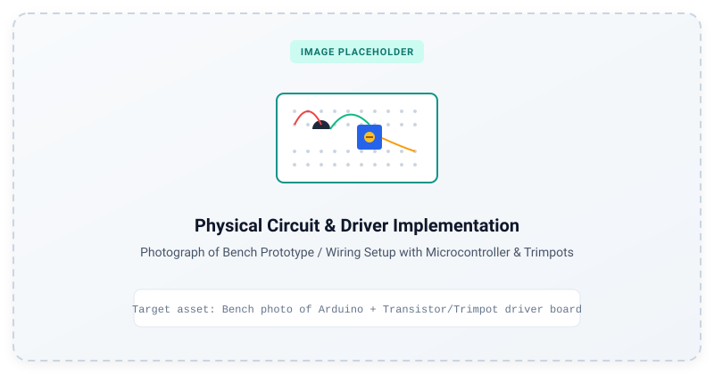

Circuit & Driver Design
This section describes the electronic drive circuitry used to power and modulate the optical LED loads in the stimulator.
Single-Channel vs. Multi-Channel Scaling
The schematics below illustrate the driver circuit for a single optical channel / colour. To drive multi-channel systems (e.g., dual-colour or 3-colour arrays), replicate the circuit for each channel, connecting each to an independent microcontroller PWM pin (e.g., separate timer outputs). All channels share the common power rails (\(+12\,\text{V}\) and GND), while their switching paths and PWM control lines remain independent.
1. Direct Microcontroller PWM Drive (Base Configuration)
The simplest driving topology connects a single microcontroller PWM output pin directly to an LED load through a series combination of a fixed current-limiting resistor and a multi-turn cermet variable resistor. This direct-drive topology works when the LED load has voltage (\(V_f\)) and current (\(I_{\text{LED}}\)) requirements that fall well within the direct drive capability of the microcontroller GPIO pins (typically \(V_{\text{pin}} \le 5\text{V}\), \(I_{\text{max}} \le 20\text{--}40\text{ mA}\)).

PWM Source: Outputs a high-frequency PWM carrier providing temporal stimulus patterns for one channel (replicate circuit and use additional PWM pins for multi-colour setups).- \(R_{\text{fixed}}\) (Current Limiter): Sets the absolute maximum current ceiling to protect both the microcontroller output pin and LED load from overcurrent when \(R_{\text{var}} = 0\,\Omega\).
- \(R_{\text{var}}\) (Cermet Trimpot): Allows manual analog adjustment of maximum forward current and luminance. Using a cermet (ceramic-metal thick-film) trimpot is critical for high-frequency PWM visual stimulation. Alternative potentiometer constructions will degrade or disrupt the stimulus.
2. Low-Side NPN Transistor Switching Drive (12V / Multi-LED Arrays)
When driving multi-LED series strings or larger arrays that exceed microcontroller GPIO limits (\(5\,\text{V}\) and \(20\text{--}40\,\text{mA}\)), an external DC power supply (typically \(+12\,\text{V}\)) is used with a low-side NPN bipolar junction transistor (BJT) switch.

Figure: Low-side switching circuit for a single colour channel. For multi-channel arrays, replicate the transistor, base resistor, trimpot, and LED strings for each channel while sharing the \(+12\,\text{V}\) rail and Common Ground.
+12V Supply& Multiple LED Lines: Powers one or more parallel lines of 3 series LEDs (\(V_f \approx 6.3\text{--}9.9\,\text{V}\) per string), leaving optimal voltage headroom from the \(12\,\text{V}\) rail.- \(R_{\text{fixed}}\) (Per-Line Current Limiter): Each parallel LED line includes its own fixed series resistor to limit and balance current across individual branches.
- \(R_{\text{var}}\) (Master Cermet Trimpot): A single shared cermet trimpot on the merged return path controls the maximum current and luminance for all parallel lines belonging to this channel.
- NPN Transistor (Low-Side Switch): General-purpose small-signal NPN transistor (e.g., onsemi 2N3904, rated for \(40\,\text{V}\), \(200\,\text{mA}\), 3-pin TO-92 package). Sinks the combined load current for this channel to ground when switched ON by the PWM signal (ensure total channel current across parallel strings remains \(\le 200\,\text{mA}\)).
PWM Source, \(R_{\text{base}}\) & \(R_{\text{pull-down}}\): An MCU PWM pin switches the transistor through a base resistor (\(R_{\text{base}} \approx 100\,\Omega\)). A pull-down resistor (\(R_{\text{pull-down}} = 10\,\text{k}\Omega\)) keeps the base pulled to \(0\,\text{V}\) during microcontroller startup or floating states.- Common Ground: The Arduino ground and the external \(12\,\text{V}\) power supply ground must be connected together to establish the shared \(0\,\text{V}\) reference required for the base-emitter voltage (\(V_{BE} \approx 0.7\,\text{V}\)) to switch the transistor reliably.
- Multi-Channel Operation: To drive a 2nd or 3rd colour channel independently, duplicate the transistor stage (\(Q_1, R_{\text{base}}, R_{\text{var}}\)) and connect its base to a 2nd MCU PWM pin (e.g. Pin 9 and Pin 10 on Arduino Uno / Nano). All channels share the \(+12\,\text{V}\) power rail and system Ground.
3. Physical Circuit & Bench Implementation

Figure: Benchtop driver circuit implementation showing Arduino microcontroller, multi-turn cermet trimpot, transistor switching stage, and wiring harness connected to LED array.